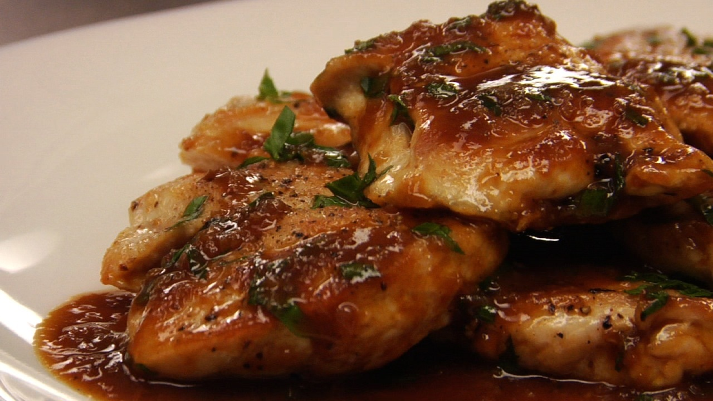
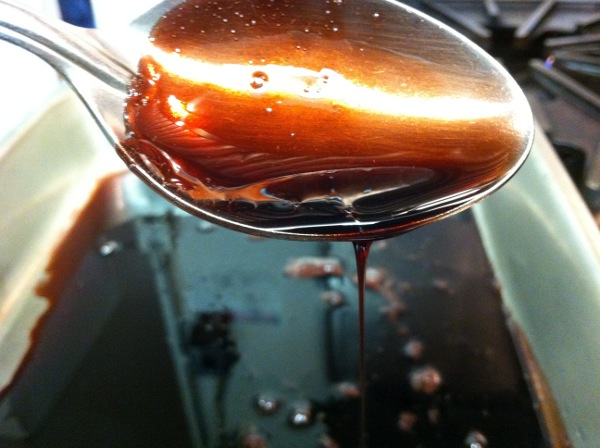

Personal Introduction
Early on in my restaurant career, I took a position as a Sous Chef with a well-known Italian restaurant chain. In this position, I had the opportunity to make many things from scratch - including a wide variety of sauces. I discovered that one of my personal favorite dishes quickly became one that I enjoyed making more than any other. I would like to take this opportunity to share with you a popular dish from classic Italian cuisine.
What is Chicken Marsala?
According to en.wikipedia.org, Chicken Marsala (Italian: Scaloppine di pollo al Marsala) is an Italian-American dish of chicken escalopes in a Marsala wine sauce. It is a variation of traditional Italian scaloppina dishes, of which there are many varieties throughout Italy. The dish dates to the 19th century, when it may have originated with English families who lived in western Sicily, where Marsala wine is produced. Slices of chicken breast are coated in flour, briefly sautéed, and then removed from the pan, which is then used to make a Marsala reduction sauce. The sauce is made by reducing the wine to nearly the consistency of a syrup while adding garlic. The sauce is then poured over the chicken, which has been kept in a warming oven, and served immediately.
Common Ingredients
While the quality, quantity, and inclusion of ingredients will vary from chef to chef, there are several which are both customary and necessary to produce a great Marsala sauce. Such ingredients are:
- Marsala wine: sweet or dry may be used, but sweet is more common
- Veal or Beef Base: typically thicker than a stock, this is used to impart a rich, complex flavor and texture to the sauce
- Shallots: an onion cultivar which, until recently, was classified as a separate sepecies. It has a mild, delicate flavor suitable for use when it is not the main focus of a dish
- Garlic: fresh, diced & peeled cloves are preferred over garlic which is commercially chopped and jarred
- Mushrooms: popular choices are either Cremini or Portabello. Button/White mushrooms are sometimes used in less traditional preparations
- Oil: many cooks will use Extra Virgin Olive Oil, but it should be blended with another oil (like Canola) as it is not suitable alone for use in high-temperature cooking methods such as sauté
- Butter: this is used in combination with an oil blend to sauté the dry ingredients. It must be combined with a type of oil to increase the temperature at which it will burn/scorch

Cooking Method
Preparing Chicken Marsala is not complicated, but should be done in several steps to produce the best result:
- Marinate, coat in flour, and sauté the chicken. Remove from the pan and keep warm. Use the same sauté pan for the next step.
- Add butter and oil to the pan. Using medium heat, stir until combined. Add shallots and garlic, cooking until translucent. Pour in Marsala wine and veal base, stirring until incorporated. Reduce the sauce until it begins to thicken; it should thickly coat the back of a spoon. 
- In a separate pan, sauté the mushroom until soft. Add to the Marsala sauce from the previous step.
- PLace the cooked chicken on a plate and top with the mushroom Marsala sauce. Serve with side dishes of your choosing.